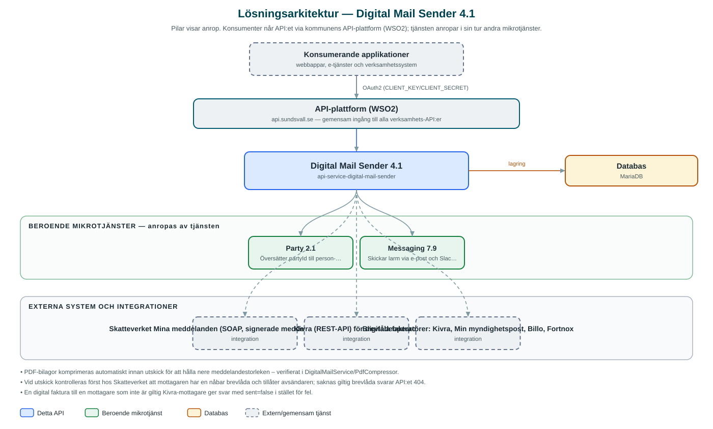

Digital Mail Sender
Levererar digital post och digitala fakturor till invånarnas digitala brevlådor, till exempel Kivra och Min myndighetspost.
Om API:et
Digital Mail Sender är kommunens väg in till den nationella infrastrukturen för digital post. I stället för att varje verksamhetssystem själv integrerar mot Skatteverkets förmedlingstjänst Mina meddelanden och mot brevlådeoperatörer anropar de detta API – i praktiken oftast via Messaging-API:et, som använder tjänsten för meddelandetyperna digital post och digital faktura.
Vid utskick av digital post översätts mottagarens partyId till person- eller organisationsnummer via Party-tjänsten, varefter tjänsten frågar Skatteverket vilken digital brevlåda mottagaren har och om avsändaren får nå den. Meddelandet skickas sedan som signerat SOAP-meddelande till mottagarens brevlådeoperatör. Tjänsten stödjer operatörerna Kivra, Min myndighetspost, Billo och Fortnox.
Digitala fakturor levereras via Kivras REST-API, efter kontroll av att mottagaren är en giltig Kivra-mottagare. API:et erbjuder även ett uppslag av vilka mottagare som kan nås digitalt, vilket Messaging använder för att avgöra om ett brev kan levereras digitalt eller ska gå som fysisk post.
Det här gör API:et
- Skicka digital post – Meddelanden med HTML-innehåll och PDF-bilagor levereras till mottagarens digitala brevlåda via Skatteverkets förmedlingstjänst.
- Skicka digital faktura – Fakturor med betalinformation (OCR, förfallodag, belopp) levereras till mottagarens Kivra-brevlåda.
- Uppslag av digitala brevlådor – För en lista av mottagare svaras vilka som har en nåbar digital brevlåda och hos vilken operatör – underlag för kanalval digitalt/fysiskt.
- Flera brevlådeoperatörer – Stöd för Kivra, Min myndighetspost, Billo och Fortnox; listan över stödda operatörer är konfigurerbar.
- Certifikatövervakning – En schemalagd kontroll övervakar certifikatet mot Kivra och larmar automatiskt via e-post och Slack om problem upptäcks.
API-dokumentation
API:ets samtliga resurser, parametrar och datamodeller finns beskrivna i en OpenAPI-specifikation som är hämtad ur källkodsförrådet. Den kan utforskas interaktivt i Swagger UI eller laddas ner som YAML.
Teknisk dokumentation
Nedan beskrivs hur tjänsten är uppbyggd, vilka andra tjänster den anropar och vad som krävs för att driftsätta den. Informationen är härledd ur källkoden och dess konfiguration på GitHub.
Arkitektur

API:et är en mikrotjänst (Java 25, Spring Boot via kommunens gemensamma tjänsteplattform dept44 (8.0.8), byggd med Maven). Konsumenter når tjänsten via kommunens gemensamma API-plattform (WSO2) på api.sundsvall.se – tjänsten anropas aldrig direkt. Tjänsten anropar i sin tur andra mikrotjänster i kommunens tjänstelandskap. Lagring: MariaDB; används för schemaläggningslås (ShedLock) – Flyway-migrationen finns men är avstängd som standard. Övriga integrationer som förekommer i koden: Skatteverket Mina meddelanden (SOAP, signerade meddelanden) för digital post, Kivra (REST-API) för digitala fakturor, Brevlådeoperatörer: Kivra, Min myndighetspost, Billo, Fortnox.
Teknikstack
- Språk: Java 25
- Ramverk: Spring Boot via kommunens gemensamma tjänsteplattform dept44 (8.0.8), byggd med Maven
- Databas: MariaDB; används för schemaläggningslås (ShedLock) – Flyway-migrationen finns men är avstängd som standard
- Övrigt: Apache CXF för SOAP mot Skatteverket med signering (kod från Mina meddelanden), Resilience4j circuit breakers, ShedLock
Beroenden till andra mikrotjänster
Tjänsten anropar följande mikrotjänster. Versionerna är hämtade ur källkodens integrationsklienter.
| Tjänst | Version | Användning |
|---|---|---|
| Party | 2.1 | Översätter partyId till person- eller organisationsnummer inför uppslag och utskick. |
| Messaging | 7.9 | Skickar larm via e-post och Slack när certifikatövervakningen upptäcker problem. |
Konfiguration och driftsättning
- URL, certifikat och nyckellager för Skatteverkets förmedlingstjänst samt lista över stödda brevlådeoperatörer
- Kivra-integration med OAuth2-klientuppgifter för digitala fakturor
- URL och OAuth2-klientuppgifter för Party och Messaging
- Maxstorlek för utgående SOAP-meddelanden (standard 2 MB)
- Anrop görs per kommun – municipalityId (och för digital post även avsändarens organisationsnummer) ingår i API-vägarna
Noterbart ur källkoden
- PDF-bilagor komprimeras automatiskt innan utskick för att hålla nere meddelandestorleken – verifierat i DigitalMailService/PdfCompressor.
- Vid utskick kontrolleras först hos Skatteverket att mottagaren har en nåbar brevlåda och tillåter avsändaren; saknas giltig brevlåda svarar API:et 404.
- En digital faktura till en mottagare som inte är giltig Kivra-mottagare ger svar med sent=false i stället för fel.
- Certifikatövervakningen mot Kivra larmar via Messaging (e-post och Slack) och sätter tjänstens hälsostatus – notifieringen skickas en gång per upptäckt problem tills status åter är frisk.
- Base64-innehåll och signaturer maskeras i anropsloggarna via Logbook-filter, både för JSON och SOAP-trafik.
Källkod
Källkoden är öppen och finns hos Sundsvalls kommun på GitHub. I källkodsförrådet finns även instruktioner för att klona, konfigurera och starta tjänsten i egen miljö.